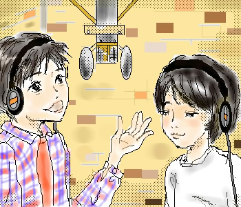

 |
October.2002
くまりんさんの2222番ゲットのリクエストで熊ちゃんとローちゃんを描いてみました。
『LOVE IS POP』のレコーディング中。こんなシーンもあったのでは？って感じで描きました。
「熊ちゃん＋もう一人」という感じで、リクエストして頂いた候補者は他にも何人か居たのですが、
今回はその中からローちゃんを選んでみました。どうでしょうか？
この二人のセットって私はあんまり見た事がないんですが、きっと二人なら
ほんわかいい感じなんだろうな〜、なんて思いながら描いてみました。
くまりんさんのリクエストで良いコンビ発見！ありがとうございます♪